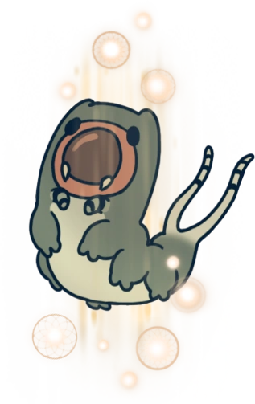
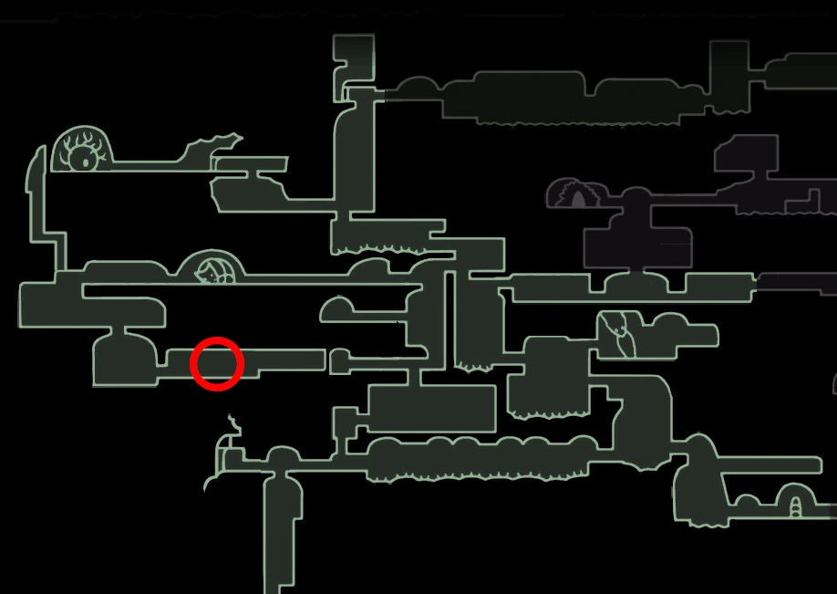

MARMU
 Boss In Action Browse More Bosses
Browse More Bosses
Marmu can be found in The Queen's Gardens, to the left of the stag station
Marmu was a kind, childish, innocent, yet very strong creature who was the protector of The Queens Gardens. She was fond of the White Lady who would often come to the gardens. She promised Marmu that the next time she returned, she would teach him to fly. However, her return took longer than expected due to the infection and Marmu passed away before the White Lady came back. A totem was then placed in her grave to honour her. When the Knight is speaking to Marmu, she says she is still waititng for the White Lady's return and even offers to the Knight to wait with her. Upon defeating her, she reminisces on how she was waiting and fighting for a very long time. She then goes to sleep and asks the Knight to wake her when the Queen (The White Lady) returns, and that she would teach them both to fly. Marmu then asks the Knight "that... would be fun... wouldn't it?" before dissapearing forever.
Health:
200/320/416/500/570
Scaling with Nail Upgrades 0/1/2/3/4 respectively.
Moves: